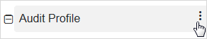
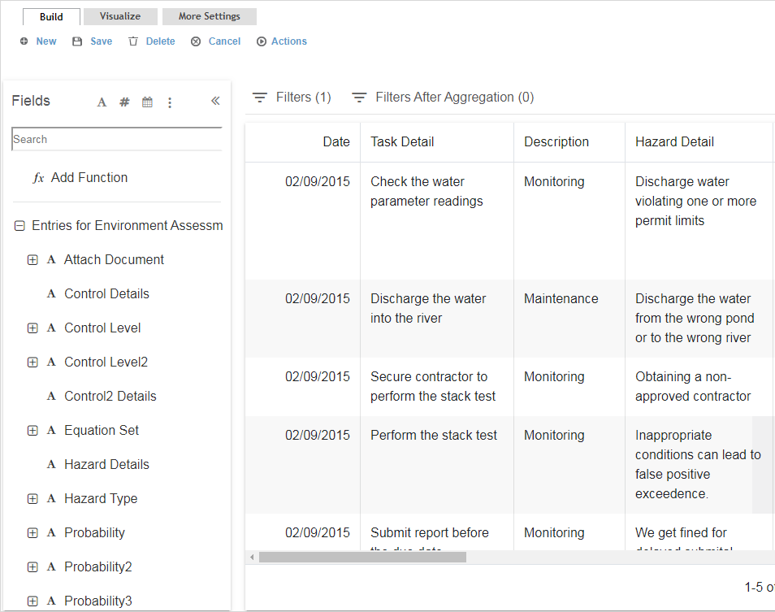
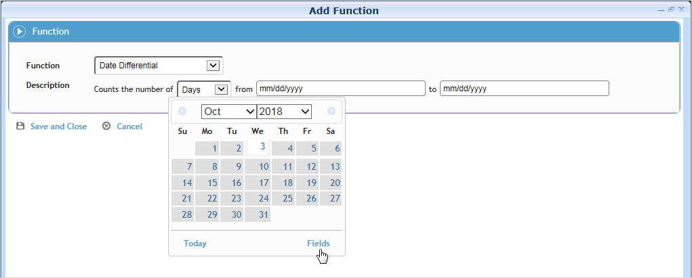
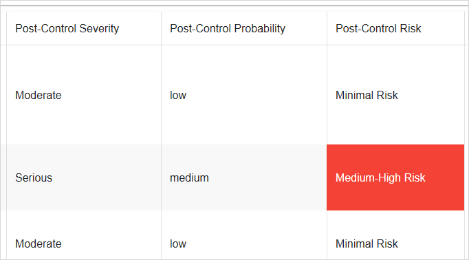
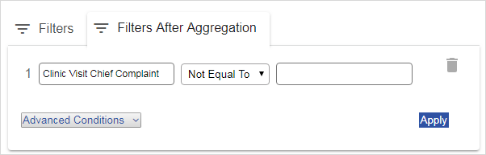
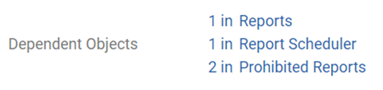

In the Business Intelligence (or Emissions Inventory) menu, click Query Builder.
Click a link to edit an existing custom report, or click New.
Only the author, and users granted appropriate permission, may edit or delete custom reports. If you do not have such permission and make any changes to a custom report, when you save you are prompted to enter a different report name. Alternatively, you can create a copy of the report with “Copy” at the end of the report name, as described in Using Existing Ad Hoc Reports.
To export a report’s configuration as a JSON file, choose Actions»Export Report Configurations. Conversely, you can import a JSON file to create a report. An administrator can migrate reports from one environment to another; see Migrating Configurations. All reports will be created as new records.
At any time you can click the query name at the top of the page to edit it.
On the Build tab, define the data that will make up the report:
Click
 to select
the source (modules and subqueries that you have been granted
access to) that the data will be pulled from. All fields from
the selected source are displayed on the left. Click Save
to continue. If you have appropriate permissions, you may
specify multiple sources to combine data. System
performance will be affected if you make a large report that joins
many sources.
to select
the source (modules and subqueries that you have been granted
access to) that the data will be pulled from. All fields from
the selected source are displayed on the left. Click Save
to continue. If you have appropriate permissions, you may
specify multiple sources to combine data. System
performance will be affected if you make a large report that joins
many sources.
Tip If you want to capture data from entities across different cloud solutions, use the Join Conditions section on the More Settings tab.
To add a related source from other layouts, or to remove a selected source, click the vertical ellipsis to the right of the source name.

If you selected a subquery as your first source, when you click the vertical ellipsis you can choose to Combine with other subqueries. The subsequent dialog box allows you to select one of the following operations and a compatible subquery (has the same number of columns, with the same data type for each column, and the data types in the same order):
Union - returns all of the rows from the first subquery, followed by all of the rows from the second subquery.
Union (exclude duplicates) - returns all of the rows from the first subquery, followed by any non-duplicated rows from the second subquery.
Intersect - returns all of the common rows from the two subqueries.
Except - returns all of the rows from the first subquery that do not exist in the second subquery.
Locate the field that you want to add to the report - you can use the search field or filter the fields to only view text, number, date fields, source fields, or layout fields, or click a header to sort by that column. Drag the field to the space on the right. Corresponding data immediately populates the new column. If you hover your cursor over a subquery field added to the report, a tooltip will display the subquery name.
Data may be hidden based on your role and security
privileges.
Numeric field values use the format specified in the Number Style system
setting, with the following exceptions:
- For aggregation types Average, Standard Deviation, Standard Deviation
Population, Variance, Variance Population, Percent of Total (Count),
Percent of Total (Sum), Sum, Minimum, and Maximum, the resulting values
will have a maximum of six decimal places.
- For Count and Count Distinct aggregations, the resulting values will
be formatted as whole numbers.
- If the report is exported to CSV or Excel, any aggregation values
will be formatted as raw numbers.

You can create a field that applies a calculation to one or more other fields. For example, if you want to monitor that corrective actions are verified in a timely manner after completion, you can create a field that calculates the number of days between those two dates. While the fields in the calculation do not have to be included in the Field Selection, a calculation field can be used by another calculation field (as long as the output type of the first field matches the required input type of the field using it). To create a calculated field, click Add Function and select the Function type:

Date Component Name, Date Component Number - Pull the name or number of a selected date, date field, or a date relative to today’s date.
Date Differential - Calculate the amount of time between two dates, which can be hard dates selected from a calendar or any date field in the selected data table. If counting Days, exclude any days if necessary, e.g. exclude Saturday and Sunday if you only want data to include a standard weekday.
Time Differential - Calculate the amount of time between any two time or date/time fields in the system. There are several fields available for this calculation that are not included in form layouts; for example, TreatmentDateTime combines the Treatment Date and Treatment Time. If counting Hours, exclude any days if necessary, e.g. exclude Saturday and Sunday if you only want data to include a standard weekday.
Accumulation - Calculate the cumulative statistical values for a selected number field; you cannot specify another Accumulation field, the Count Distinct aggregator, or a calculation field that always returns the same value (e.g. a datediff between two constant dates).
Arithmetic - Perform a calculation using the specified arithmetic formula. If you want the calculation to be performed after the data for the field has been aggregated, select the After Aggregation check box. If the checkbox is selected:
- The calculation cannot be selected as a field in the Concatenate Columns, Concatenate Rows, or Categorize calculations.
- If the calculation is then used by another field in the report, the After Aggregation check box becomes disabled and cannot be deselected.
- You can add the calculation to the Filter tab only in the “Criteria (after aggregation)” section.Round - Round a selected number field to the specified number of decimal places.
Concatenate Columns - Combine values from two or more fields into a single string, with each value separated by a user-defined delimiter such as a comma or semicolon. For example, combine the separate Street, City, Province, Postal Code fields into a single Address field.
Concatenate Rows - Combine values from a given field into a single string, with each value separated by a user-defined delimiter such as a comma or semicolon. For example, you might want one row for each case that includes a field showing all activities, rather than having a separate row for each activity.
Note If your queries run slowly with this function, select the Use Temp Tables for ConcatenateRows checkbox on the More Settings tab to possibly improve performance.Categorize - Define how a particular field’s values will be categorized: either as a fixed output value or as a selected field. For example, you can choose to categorize all employee diagnoses that use an ICD-9 medical code as “ICD-9”, and everything else display the proper medical code description. You can also use this calculation field to group medical conditions by major diagnoses; for example group all diagnoses that are (for example) equal to, or less than, or not equal to a particular medical code:

Convert to Number - convert the values of the selected text field to numeric values (integers or decimals) so that they can be used in other calculations.
The calculation field is added to the report and appears in the Fields selection list. Calculation fields are treated the same as other fields in queries (e.g. as criterion, for selection in visualization, included in the dashboard, etc.). If a calculated field is edited or deleted, any filter (on the Filter tab) that uses the calculated field will be deleted automatically from the report.
Calculation fields inherit the security configured
for the fields used to create them. For example, a user will not be
able to view data generated by a calculation field if the field was
created using another field that is prohibited from the user.
If a field is prohibited from a role, any calculated fields that are
based on that field will not be available on the Filter tab. If a
report has a calculated field that is based on a prohibited field,
the value of the calculated field will be masked using the “XXXX”
format.
Repeat as required to populate the report with the desired fields.
Options to limit negative performance issues:
- When adding fields to the query, you are limited to 100 fields (including
calculated fields).
- You can adjust the number of seconds before a query times out in
the “Query Time Out (in seconds)” system setting.
- To limit the amount of data that is returned, choose Actions»Set
row limit: enter a number in the Row
Limit field and select either Rows or
Percent. For example: if you set a row
limit of 50% on a report that would normally return 200 rows, the
report will return only the first or last 100 rows (depending on the
ascending/descending Sorting criteria). If you select Include
Ties and the last row returned has ties, those rows will
also be included in the report. The row limit is applied after data
is aggregated and grouped, and will be applied wherever the report
is used (e.g. in Report Scheduler, Dashboard indicators, etc.). The
Row Limit overrides the default Dashboard data point limit of 12.
If you are creating a Distribution List of
- employees: one of the columns must be Employee #
- Cority users:
one of the columns must be Login Name
- email addresses: one of the columns must be Email Address.
If you are creating a subquery for use in a custom
measure:
- the first column must be a number field (e.g. Amount)
- the second column must be a date/time field
- subsequent columns must be the GDDLOFB ID fields, in that order)
Note that the Subquery field is not available on default custom measure
layouts.
Click « to collapse the Fields list to see more of your report.
If necessary, adjust how the data is organized:
Drag columns to rearrange them.
Click the vertical ellipsis in a column heading to view the Column Settings which allow you to:
Sort the report by that column. You can select multiple columns to sort on.
This sort order also applies to data points selected for graphs unless a specific Field to Sort and sort order is defined on the Visualize tab.Rename or remove the column.
Enable Multiple Values: this allows you to select up to three of the look-up table values to be included in the query/report, and choose for the resulting data to be rendered on a table in multiple rows (the default) or concatenated (numeric and date multi-select fields cannot be concatenated nor aggregated). If data is rendered in multiple rows, aggregation works for string multi-select fields. If data is concatenated, aggregation is disabled. If aggregation on more than one multi-select field is required, use 'count distinct' on the aggregation menu to obtain accurate counts.
This feature is disabled if:
• No applicable layouts have multiple values.
• The field itself is not a look-up selector field.
• The field's look-up table is empty (has no values/entries).
This functionality is not currently supported for subqueries.
If Disable Multiple Values is selected, only the first value for the field will be returned in the report data, even if the field itself has "Enable Multiple Values" selected on the applicable layout.Specify an Aggregation type; the options vary depending if the field is numeric, Boolean, or neither. If an aggregation type is defined for at least one field, data is grouped by the remaining fields that do not have an aggregation type defined. If no aggregation type is defined for any of the fields, data is not grouped.
Apply a background color depending on field values (conditional formatting). This formatting appears on the Build tab, on tables and bar and pie charts on the Visualize tab, and on the Advanced Dashboard. The colors will also be included on any exports from the Query Builder and Advanced Dashboard), as well as any reports or letters exported using the Report Scheduler (except for any rows created by the Grouping filter). In the example below, any Post-Control Risk fields of Medium-High Risk are highlighted in red.

Apply a filter to control the data that is included in the report:
- To filter by a field in the report, in the Column Settings choose either Filter or Filter (After Aggregation). The field is added to the Filters or Filters After Aggregation sub-tab above the report data as applicable. You can also drag the column heading to the appropriate sub-tab, even if it is collapsed.
- To filter by a field that is not in the report, drag a field from the Fields list into the Filters sub-tab above the report data.
- If this is a subquery and you want to filter by a field value that is not in the main source entity, select the Filter Entity on the More Settings tab, then on the Build tab add a filter (for an integer, number or string field type), select the “Is Filtered By” operator and select a field from the Filter Entity.
- To filter by a particular cell’s value, right-click on the cell and choose Keep Only (to add a filter equal to the value), or Exclude (to add a filter not equal to the value). If the selected cell is in an aggregated column, the filter will be applied after aggregation.
For more information, see Filtering Records.
If you choose a tree field, you can choose a node from either the current tree or a historical tree (select the date). You can optionally choose the fields but leave the filters empty to allow end users to enter their own values.
After adding the field(s) and criteria, click Apply to update the report data.
If you are defining a subquery for use in a LettersTemplate, you can limit the letter to only include data related to the record the letter is sent from. Filter on a field that ends in “ID”, then in the operator field beside it, select “Equals Main Record ID”. Note that no data will be shown on the Build tab because it must be generated from a record in the application.
On the Visualize tab, define how the data will be presented:
The left side is a Preview that reflects the data from the Build tab and is a true representation of how the report will appear on the dashboard.
On the Appearance sub-tab on the right, define the appearance of the data:
Select the presentation Type. To have the data appear in the Dashboard as an interactive table, select Table as the Type.
Any conditional formatting defined on the Build tab is reflected in the Preview. Optionally, select a color for all other data (click on the color again to remove it).
For the “standard” chart types (bar, line, area, point, pie, radar), select which Field to Graph/Drill. A chart can have multiple drill-down levels; the drill-down order is determined by the order in this list. To add, remove, or reorder fields, click
 .
The selection list does not include any fields that have an aggregation
type. If a drill path has been defined for a query, you can drill
through to records in the Preview.
.
The selection list does not include any fields that have an aggregation
type. If a drill path has been defined for a query, you can drill
through to records in the Preview.
If an enum field is selected as the Field to Graph/Drill, then the enum values are displayed (instead of the corresponding numeric values) on the indicator's x-axis and tooltip.For charts only: Select the Value to Graph: either a simple Count of Records or any field defined with an aggregation type that results in a numeric value (Count, Sum, Average, Percent Sum, Percent Count, any Standard Deviation, or any Variance). For single-value visualization types (Radial Gauge, Circular, Number Only), if the query returns more than one value, the indicator will use the first one returned.
For the “standard” chart types, the chart will use
the first Field to Graph/Drill field
for the x coordinates and the Value to Graph for
its y coordinates. That is, the query will group by the Field
to Graph, and aggregate by the Value
to Graph according to the aggregation type specified.
If the user drills down on a data point, it will filter by the value
of that data point and then group by the next field in the Field
to Graph/Drill field.
For Pie charts, each slice will represent a distinct Field
to Graph value, and the value of each slice will be generated
according to what is selected for the Value
to Graph.
If the query includes multiple aggregated numeric columns and the Type is a “standard” chart type, you can include each aggregate value as a separate series with a distinct color. For the first series, select the color and Value to Graph as usual. Then click Add Series (at the bottom of the Appearance sub-tab) and select the color and Value to Graph for that series. If the chart is a bar graph, you can click the gear icon
 beside the series name to select from multiple
bars or stacked bars.
beside the series name to select from multiple
bars or stacked bars.
This functionality is not compatible with conditional coloring.For the “standard” chart types, optionally select a Field to Sort by and indicate if it should sort Ascending or Descending (this overrides any sort order indicated on the Build tab). This field does not have to be used in the chart. For example, if you are showing data by month, you want to sort it by month number, not by month name. If no Field to Sort is selected, the chart will sort data by the Field to Graph selection.
If the selected Field to Sort does not have an aggregation type or associated grouping, the chart will group data by the Field to Sort, which may result in what appears to be duplicate entries in the chart.
For Radial Gauge charts, enter the Maximum Value on Gauge.
For Circular charts, indicate if the Maximum Value on Gauge value is a static number (and enter the number) or the total of a specified aggregate field. You can also define how color ranges are depicted in dashboard indicators: select the measure to be used for the upper and lower boundaries (can be the same or different) and the colors to represent where the data falls in relation to those ranges.
For the “standard” chart types (bar, line, area, or point), enter the minimum and maximum values to be shown on the X and Y axes. For this functionality to work as expected for an x-axis on a dashboard, you must use Advanced Dashboard and define a numeric field to graph for your x-axis.
On the Interaction sub-tab, define the behavior of the records in the Dashboard:
Specify how (or if) Records will open from the Dashboard. This applies to tables and “standard” chart types at the lowest drill-down level. For records opened from charts, you can select which entity to open records from (the From field only lists entities that have an associated layout). For example, if the report includes Case Master and Clinic Visit data, you can specify whether the case record or the clinic visit record would open.
If you want to allow dashboard users to add or modify criteria, select an option in the Dashboard Filtering field:
- Disabled prevents any further filtering on the indicator.
- Enabled For Adding Criteria Only locks the query criteria from view but allows users to add additional criteria fields.
- Enabled For Adding and Modifying Criteria allows users to view and modify the query criteria as well as add additional criteria fields.If you want to include the chart or table on your Dashboard, enter a name for the indicator in the top left corner of the Preview, then click Create/Update Dashboard Indicator. For more information, see Using the Dashboards.
“Circular”, “Number Only” and “Map” types can be added
to the Advanced Dashboard only.
The “Injuries by Part of Body” report uses a “BodyMap” type that allows
the data to be viewed as a heat map on this tab or in a dashboard
indicator. For more information, see Monitoring
Injuries by Part of Body on a Heat Map.
On the More Settings tab define overall report parameters:
Optionally enter a Description for the report. The Description will display in the Reports list view but will not be included in a query export.
If you want to capture data from entities across different cloud solutions, use the Join Conditions section. You can join multiple entities (look-up tables, data tables, and subqueries) and multiple fields within those entities. The entity selected on the Build tab is shown as the parent entity. Select the additional Entity Type and Entity, and then identify what fields should be matched to be included in the query. First select the Child Matching Fields; that is, one or more fields from the entity you just added. Then select the Parent Matching Field; that is, one or more fields from the parent entity. Indicate if all parent records should be included or only Matching Records.
Select the Site Security radio button beside the entity that you want to apply site security to, or select the Disable Site Security checkbox, e.g. for summary reports or if the report does not contain sensitive information.
If enabled for an entity, site security applies to the regular and Advanced Dashboard; exported Query Builder and Report Writer reports; subqueries used in reports, letters, and business rules; OData; and the Report Writer Utility.
For reports that were created prior to 2018.3, the Disable Site Security checkbox will be unselected. If a report is used as a subquery in another report, the data in each report will be filtered according to their respective Site Security settings.
Indicate if this query is to create a Distribution List for use in scheduled reports or Business Rule Email Actions.
The Dependent Objects field lists all object types (e.g. business rule, letter template, dashboard views, custom metrics, etc.) that reference the report. Each object type is a clickable link that allows you to open the the object to unlink or modify it before editing or deleting the report. If the object is a SEG-linked query, you will be directed to the SEG Management record for the corresponding SEG.
If the query has dependent queries/reports that are prohibited fromyour role, the link will display a “[n] in Prohibited Reports” link, where [n] is the number of prohibited queries/reports. Click the link to view the dependent queries/reports and the prohibited role(s) for each. If you have permission to view the Prohibited Reports tab in the Roles module, each prohibited role will be a clickable link to the Prohibited Queries tab for the corresponding role (see Setting Up Roles).
If this query will be used in a business rule, letter template, custom measure or other report, select the Subquery checkbox. This will help minimize the risk of a user editing or deleting the report and breaking other workflows that use it. A subquery cannot be deleted if it is in use; the association must be removed first.
If you want to filter the subquery by a field value that is not in the main source entity on the Build tab, select the Filter Entity. Then on the Build tab add a filter (for an integer, number or string field type), select the “Is Filtered By” operator and select a field from the Filter Entity. A business rule configured to trigger on condition of this subquery will fire only for the configured field filter. (Note: The data preview on the Build tab will show the data unfiltered by this condition because the report won't be filtered by that condition until the business rule is triggered.)If this query will be used in role security, select Security Query. Only Administrator users can see security queries and assign them to a role. This functionality, when used together, allows role security to be based on criteria other than (or in addition to) GDDLOFB.
If you want other users to be able to use this report (and you have the appropriate permission), select Publish Report. The report is added to the list of standard reports available by module (linked to the module associated with the Selected Entity). Users can modify the report criteria without saving their criteria changes or save it as a new query. See Generating Standard Reports.
The original ad hoc report is also still available in the User Reports list. The user who created the report can change the criteria which will be reflected in the published report. Other users can open a shared report and run it with different criteria without saving it as a new query.
To remove a published report from the standard Reports list, clear Publish Report. You cannot delete an ad hoc report that has been published; you must clear Publish Report first.If you are using a Concatenate Rows function and the query is running slowly, selecting the Use Temp Tables for ConcatenateRows checkbox may improve performance.
Indicate whether to include the Company Name, the Report Confidentiality Statement, and/or the Company Logo (as defined in the system settings of the same names).
Optionally, enter any further information to appear in the Page Header; this will appear above the report title but below the company logo.
Optionally, indicate if totals and sums should be displayed for the entire report:
Display total row count (shows the total number of records for the entire report above the report column headers)
Display column sums (choose the column to sum, shows the grand total sum in the last line of the report).
Optionally, select a field to group the report by (for best performance, only choose one grouping). For each grouping, select either:
Display Group Count Total (shows the number of records in that group, beside each group name) or
Display Sum of Columns (choose the column to sum, shows the group sum in the last line of each group).
If you want to save the report template for future queries, click Save. Saved queries can be scheduled for recurring generation; see Scheduling Reports.
Optionally, do one of the following: